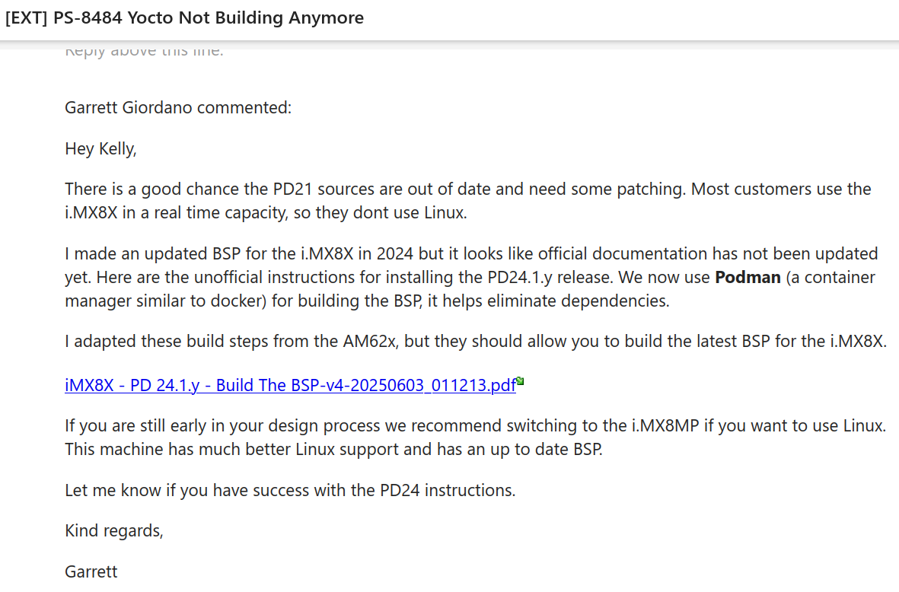
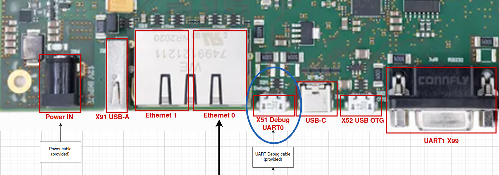
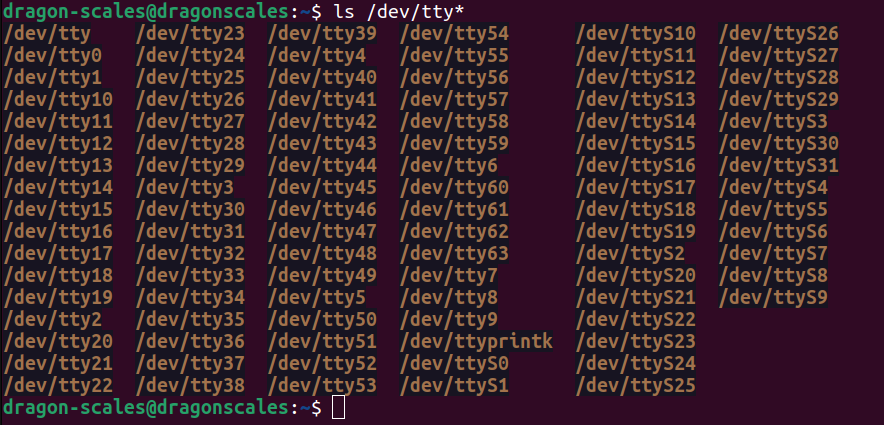
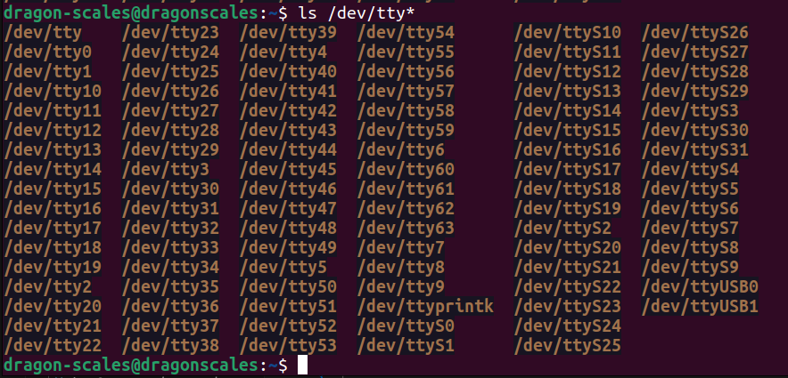
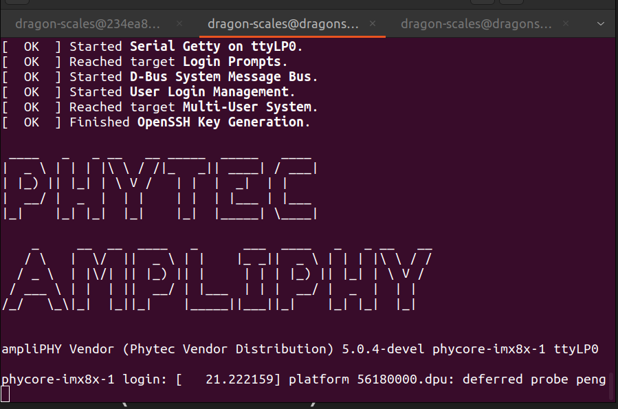
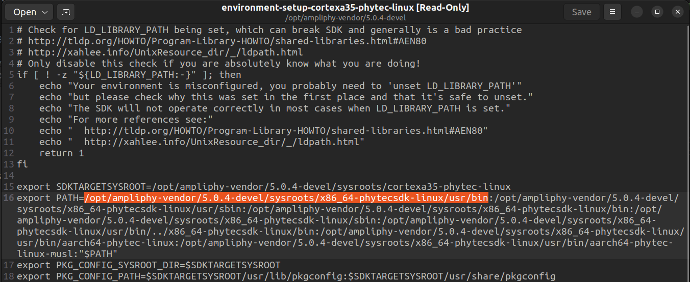
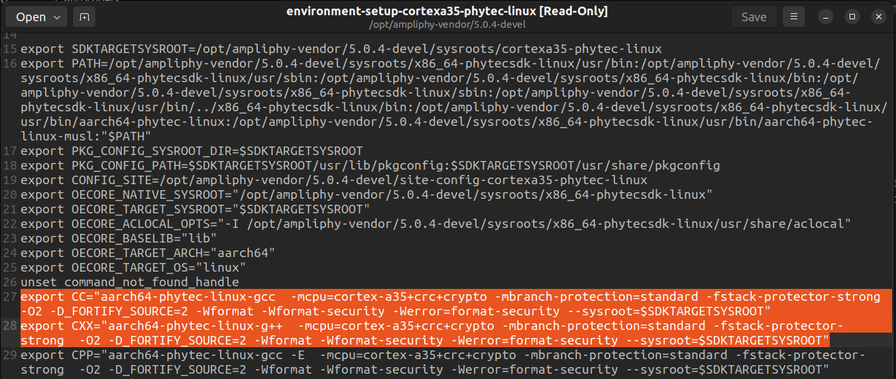
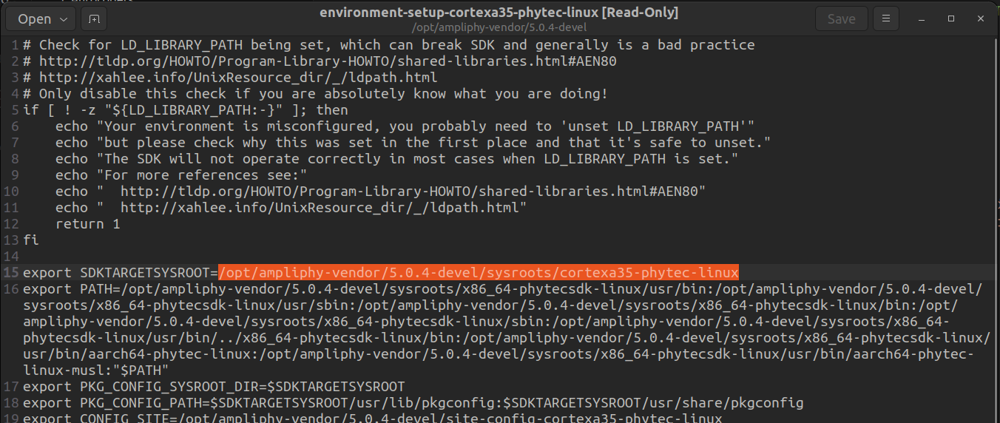

i.MX 8X Yocto BSP Development and Usage
We are using a custom BSP (board support package) for Yocto Linux v5.0 (scarthgap). The BSP comes directly from Phytec support, and can be built on an Ubuntu 22.04 host machine.
This version of the BSP is only for the PhyTec i.MX 8X SOM Development Kit.
We initially tried to rebuild the BSP they had in their guide to make Yocto v3.0 (zeus) using an Ubuntu 18.04 host machine, but we kept running into errors, so we asked Phytec Support for help. This is what they said:

The guide they sent us will be relayed here.
Building the BSP
Requirements
- Ubuntu 22.04_ LTS, 64-bit Host Machine with root permission
- At least 100GB of free disk space
- At least 8GB of RAM
- Internet Connection
- SD Card
First-time Setup
-
Install the podman container tool.
-
Make sure your git environment is set up.
-
Make a dedicated directory for the BSP and navigate there.
-
Pull the podman container image provided by PHYTEC.
Configuring the Build
-
Start the podman container. Run this command every time you want to start a new shell session.
-
Download the BSP Meta Layers. This command will lead you through an interactive tool to set up the BSP. The platfrom and release are preselected, so you can just enter
The build and release should look like this:1when prompted. -
Initialize the BSP environment. Run this every time you want to build the BSP.
-
Configure the build. Use whatever text editor you want, but this tutorial uses vi. Modify the build's configuration file to accept the EULA.
In local.conf: Optional code for local.conf: -
Start the build.
If you run into errors, you can clean the build directory with the following: -
Once you have successfully built, the generated images can be found at
$BUILDDIR/deploy-ampliphy-vendor/images.
Flashing and Booting the Board
-
Use balenaEtcher to flash one of the generated images to your SD card. We used the image called
phytec-headless-image-phycore-imx8x-1.rootfs-20250604171621.wic.xz. Your file name may have a different number at the end. -
Once the SD card is done flashing, insert it into the IMX board. Connect the provided UART Micro USB cable into the Debug port X51 (pictured below). Plug the other end into the host machine.

-
Connect to the serial port before you power on the board.
Using Linux Terminal
- Install minicom.
- Check what port the IMX is using by running the following command with and without the UART Debug cable plugged into your computer. In this example, the IMX is using
/dev/ttyUSB0and/dev/tty/USB1.

After IMX is plugged in:

- Connect to the serial ports using minicom. When minicom configuration opens, select
Serial port setupthen selectAto change the device path to/dev/ttyUSB0. The IMX uses one serial port for terminal commands and another for debug. Terminal should be on USB0. PressEnterto save changes. Back on the configuration page, selectExit. You should be connected to the terminal of the IMX.
- Once you have connected to the IMX, plug in the power cable. There will be a short boot sequence with an option to stop autoboot. You do not need to stop autoboot. There will evetually be a prompt to enter a password. The default password is
root.
Using Windows Tera Term
-
Do not power the board yet. Connect the UART debug cable to X51 UART0 on the board, and the USB part into your computer.
-
There are two serial ports that are specific to the i.MX 8X. One will be the debug terminal, and the other will be the main command terminal. Each different Windows host computer will have different names for these ports, so in the next few steps the ports COM15 and COM16 are example ports from Kelly’s computer.
-
It is a good idea to open both serial ports that appear as options in Tera Term during your first setup, so that you know which ports are which for your specific computer.
-
Start Tera Term (Windows computer). Select Serial COM15. Go to Setup > Serial Port. Change the speed to 115200. Press OK.
- COM15 is the command terminal. To see the debug terminal, follow the same steps for COM16.
- COM15 and 16 may be different on other computers. To be safe, set up both ports on the first boot to your device.
- Make sure to set them up before powering the board, or you will miss the sign in prompt.
-
Plug in the DC power cable to power on the board.
-
Sign in when prompted. Password is “root”.
-
Once you have connected to the IMX, plug in the power cable. There will be a short boot sequence with an option to stop autoboot. You do not need to stop autoboot. There will evetually be a prompt to enter a password. The default password is
root. The screen should look like this:
Setting up the SDK
-
Make sure you set up the BSP build enviornment (described above), and run the following command to populate the SDK.
-
The SDK files are generated in
BSP-Yocto-NSP-i.MX8X-PD24.1.y/yocyo/build/deploy-ampliphy-vendor/sdk. Navigate to that directory. -
Find the file
phytec-ampliphy-vendor-glibc-x86_64-phytec-headless-image-cortexa35-toolchain-5.0.4-devel.shand right click to “Run as Program” -
A window will open to SDK setup. Leave everything as default, you should be able to just hit “Enter”.
-
The toolchains for compiling will be here:
/opt/ampliphy-vendor/5.0.4-devel/sysroots/x86_64-phytecsdk-linux/usr/bin/aarch64-phytec-linux
F Prime Integration
In our F Prime deployment, we use environment variables for the toolchain paths. The following instructions will guide you through setting up global environment variables.
-
To create a global environment variable, start a new terminal session. From your home directory, edit the
/etc/environment/file. -
Add a new line defining the variables.
IMX_C_COMPILER="/opt/ampliphy-vendor/5.0.4-devel/sysroots/x86_64-phytecsdk-linux/usr/bin/aarch64-phytec-linux/aarch64-phytec-linux-gcc" IMX_CXX_COMPILER="/opt/ampliphy-vendor/5.0.4-devel/sysroots/x86_64-phytecsdk-linux/usr/bin/aarch64-phytec-linux/aarch64-phytec-linux-g++" IMX_ROOT_PATH="/opt/ampliphy-vendor" -
Save and exit the text editor. Restart your computer for the changes to take effect. Once your computer boots up again, you can test your variables with the following commands in terminal:
F Prime CMake Setup
This setup is not required for first time users, as these files have already been created and exist in the current F Prime deployment. This is simply here to show how the files were created.
For more information on how we created the F Prime platform and toolchain files, please refer to the guide below. You can find these files in our fprime-scales repo.
-
In NASA's fprime repo, there is a toolchain template in
fprime/cmake/toolchaincalledtoolchain.cmake.template. Make a file infprime-scales/cmake/toolchaincalledimx8x.cmakeand copy/paste the toolchain.cmake.template contents from the same directory. -
Do the same for your platform file. In
fprime-scales/cmake/platformmake a file calledimx8x.cmakeand copy/paste theplatform.cmake.templatecontents fromnasa/fprime/cmake/platform. -
Find the toolchain path. Look at the
environment-setup-cortexa35-phytec-linuxfile in/opt/ampliphy-vendor/5.0.4-develLook at line 16 beginning with
export PATH. The first part of the path is/opt/ampliphy-vendor/5.0.4-devel/sysroots/x86_64-phytecSDK-linux/usr/bin.
If you look at the files in this directory you will see two folders,
aarch64-phytec-linuxandaarch64-phytec-linux-musl. If you pay attention to the path, it follows a pattern. After/sysrootsthere is/x86_64-phytecSDK-linuxwhich is the architecture of your host computer. So, to complete the path we must use theaarch64-phytec-linuxfolder since that is the architecture on the IMX8X. That folder contains the toolchains for compilation. -
Make sure you set up your enironment variables as described in the previous section.
-
Pick which toolchains to use, from the same
environment-setup-cortexa35-phytec-linuxfile.Look at lines 27 and 28 beginning in
export CCandexport CXX. The first argument in each path is which toolchain file to use in the toolchain path we just found. For CC, it isaarch64-phytec-linux-gcc, and for CXX it isaarch64-phytec-linux-g++.
Add these to your toolchain file.
-
Add compiler options, found in the same
environment-setup-cortexa35-phytec-linuxfile.In the same two lines (27 and 28), the remaining arguments are the same for CC and CXX. These are your compiler options. If you notice, the compiler options end with
--sysroot=$SDKTARGETSYSROOT. If we left this as-is in the F Prime cmake file, there would be an undefined reference. So, look at line 15 in the environment setup file. It contains the path to that reference.
Replace
$SDKTARGETSYSROOTwith/opt/ampliphy-vendor/5.0.4-devel/sysroots/cortexa35-phytec-linuxin your toolchain and platform cmake files.We also added the
-Ocompiler option, due to the GitHub discussion from piror compliation issues.Code for
toolchain/imx8x.cmake:add_compile_options(-O -mcpu=cortex-a35+crc+crypto -mbranch-protection=standard -fstack-protector-strong -O2 -D_FORTIFY_SOURCE=2 -Wformat -Wformat-security -Werror=format-security --sysroot=/opt/ampliphy-vendor/5.0.4-devel/sysroots/cortexa35-phytec-linux)Code for
platform/imx8x.cmake:# STEP 3: Specify CMAKE C and CXX compile flags. DO NOT clear existing flags set(CMAKE_C_FLAGS "${CMAKE_C_FLAGS} -mcpu=cortex-a35+crc+crypto -mbranch-protection=standard -fstack-protector-strong -O2 -D_FORTIFY_SOURCE=2 -Wformat -Wformat-security -Werror=format-security --sysroot=/opt/ampliphy-vendor/5.0.4-devel/sysroots/cortexa35-phytec-linux" ) set(CMAKE_CXX_FLAGS "${CMAKE_CXX_FLAGS} -mcpu=cortex-a35+crc+crypto -mbranch-protection=standard -fstack-protector-strong -O2 -D_FORTIFY_SOURCE=2 -Wformat -Wformat-security -Werror=format-security --sysroot=/opt/ampliphy-vendor/5.0.4-devel/sysroots/cortexa35-phytec-linux" ) -
Finishing
toolchain/imx8x.cmake.Complete Step 1 of the template by commenting out or deleting the fail-safe line.
Complete Step 2 of the template with the system name
"imx8x"Code.
```powershell ## STEP 2: Specify the target system's name. i.e. raspberry-pi-3 set(CMAKE_SYSTEM_NAME "imx8x") ```Complete Step 4 of the template with the following path:
/opt/ampliphy-vendorCode.
```powershell # STEP 4: Specify paths to root of toolchain package, for searching for# libraries, executables, etc.set (CMAKE_FIND_ROOT_PATH "/opt/ampliphy-vendor") ``` -
Finishing
platform/imx8x.cmakeComplete Step 1 of the template by commenting out or deleting the fail-safe line.
Complete Step 2 of the template by specifying
LINUXas the OS type.Code.
```powershell ## STEP 2: Specify the OS type include directive i.e. LINUX or DARWIN add_definitions(-DTGT_OS_TYPE_LINUX) ```Between Steps 4 and 5, we need to add drivers. Look in
platform/Linux.cmakeand copy/paste thechoose_fprime_implementationlines to yourplatform/imx8x.cmake. We made one small change to the last two implementation lines, switching fromLinuxtoStub. We also added the# Use common linux setupand# Add Linux specific headers into the systemchunks to theplatform/imx8x.cmakefile.Code.
```powershell # end of Step 4 choose_fprime_implementation(Os/File Os/File/Posix) choose_fprime_implementation(Os/Console Os/Console/Posix) choose_fprime_implementation(Os/Task Os/Task/Posix) choose_fprime_implementation(Os/Mutex Os/Mutex/Posix) choose_fprime_implementation(Os/Queue Os/Generic/PriorityQueue) choose_fprime_implementation(Os/RawTime Os/RawTime/Posix) choose_fprime_implementation(Os/Cpu Os/Cpu/Stub) choose_fprime_implementation(Os/Memory Os/Memory/Stub) set(FPRIME_USE_POSIX ON) # STEP 5: Specify a directory containing the "PlatformTypes.hpp" headers, as well # as other system headers. Other global headers can be placed here. # Note: Typically, the Linux directory is a good default, as it grabs # standard types from <cstdint>. add_definitions(-DTGT_OS_TYPE_LINUX) # include_directories(SYSTEM "${FPRIME_FRAMEWORK_PATH}/Fw/Types/Linux") include_directories(SYSTEM "${CMAKE_CURRENT_LIST_DIR}/types") ```